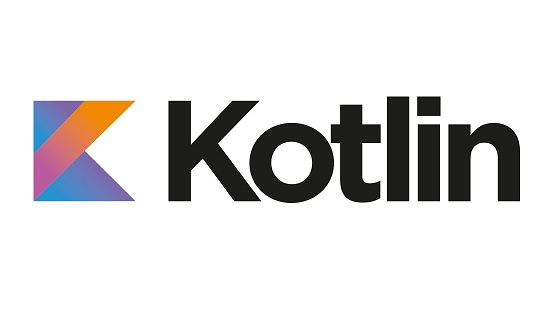
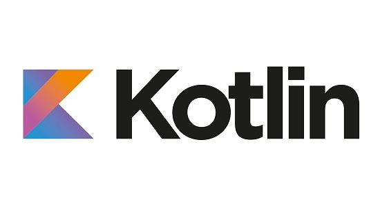
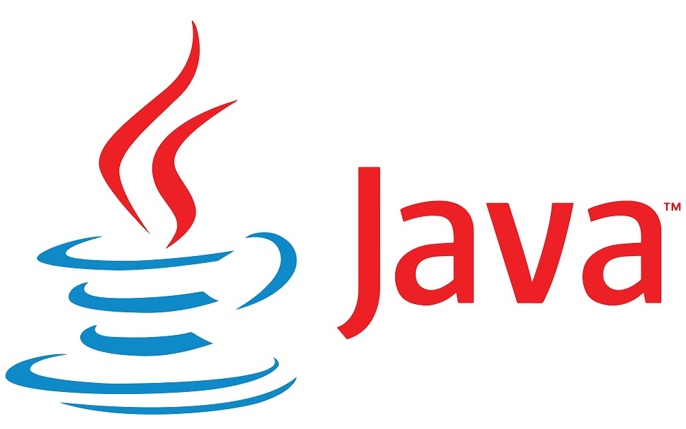
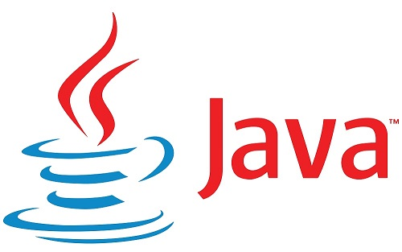

En esta entrada hablaremos de esta difícil discusión que tienen los programadores hoy en día, donde ponen bajo contienda al relativamente nuevo y versátil Kotlin y al ya maduro pero fuerte y robusto Java. Daremos ventajas y características sobre cada uno, para que puedas tomar la mejor decisión para tu próximo desarrollo.
Kotlin
El proyecto Kotlin comenzó a desarrollarse en 2011 por la compañía JetBrains y finalmente vio la luz en el 2012 como código abierto por medio de la licencia de Apache 2. El nombre de Kotlin fue tomado de la isla del mismo nombre que se encuentra cerca de San Petersburgo. Uno de los objetivos primordiales de Kotlin es que pueda compilar más rápidamente que Java.
En el año 2017 Google anunció soporte de primera clase para Kotlin en Android, poniéndose al mismo nivel que Java. El objetivo de Kotlin es no solo para el desarrollo para aplicaciones móviles, sino para irse abriendo camino en otros sectores.
 
Kotlin es oficialmente el lenguaje principal de desarrollo para Android.

Kotlin es oficialmente el lenguaje principal de desarrollo para Android.
Ventajas y características:
- Curva de aprendizaje rápida.
- Interoperabilidad con Java.
- Bajo riesgo y facilidad en migraciones, con Kotlin se puede probar sólo una parte del código, sin alterar la totalidad de este facilitando la decisión de migrar o no completo el proyecto a Kotlin.
- Ofrece la ventaja de poder mantener código existente en Java y poder llevar a cabo los nuevos desarrollos en Kotlin sin problemas.
- No hay “excepción por punteros nulos” (Null Pointer Exception), es por ello que no es posible asignar un valor nulo a una variable independientemente de su tipo.
- Es posible manejar un constructor primario y de ser necesario constructores secundarios.
- Admite soporte para variables genéricas.
- Para los sistemas que manejen la API RESTful y analicen objetos de tipo JSON podemos almacenar los valores de las propiedades dentro de un mapa.
- Es posible trabajar con frameworks o librerías JQuery, React, Angular, entre otros.
- Cuenta con un excelente soporte para Android Studio.
- Permite desarrollos multiplataforma, haciendo que sea interoperable.
- Tiene corrutinas que optimizan la programación asíncrona siendo de gran ayuda en los accesos y llamadas a base de datos.
- Se puede “llamar” código de JavaScript desde Kotlin, también se pueden generar librerías del código de Kotlin que pueden ser consumidas como módulos por cualquier código basado en JavaScript o TypeScript.
Java
Es un lenguaje de programación que se comenzó a desarrollar en junio de 1991 por James Gosling, Mike Sheridan y Patrick Naughton, se diseñó con una sintaxis basada en C/C++ para que le fuera familiar a los programadores.
Java finalmente vio la luz en mayo de 1995 lanzado por Sun Microsystems. Java nació con los objetivos de ser un lenguaje con una sintaxis sencilla “orientada a objetos” y de tener portabilidad con los diferentes sistemas operativos.
En nuestros días podemos encontrar Java en cualquier lado, desde centros de datos, computadoras, consolas de videojuegos y dispositivos móviles.
La máquina virtual de Java (JVM) es un elemento clave en la portabilidad del código de Java, ya que esta será la que convierta nuestro código a lenguaje máquina para poder ser interpretado, llevando acabo la intención de escribir el código una sola vez y poder ejecutar en cualquier dispositivo.
  Java es uno de los lenguajes mas fuertes, robustos y con una amplia trayectoria.Ventajas y características:
- Es un lenguaje de programación distribuido, orientado a objetos e independiente de plataforma.
- Puede ser ejecutado en cualquier hardware lo que hace que se convierta en portable.
- Cuenta con un recolector de basura que permite liberar y optimizar la memoria.
- Con Java podemos llevar a cabo dentro del mismo programa de forma simultánea una serie de tareas, haciendo que sea multi-hilo, mejorando tanto la velocidad de ejecución como el rendimiento del software desarrollado; gracias a esto aumenta su concurrencia y permite que sea un lenguaje receptivo e interactivo.
- A través de XML (Extensible Markup Language) podemos crear sitios web dinámicos.
- Es multiplataforma y cuenta con altos niveles de seguridad.
- Su curva de aprendizaje es rápida, por ser un lenguaje de simple escritura.
- Posee una amplia biblioteca y una gran comunidad activa en la web siendo este punto una de las grandes ventajas para los programadores en general.
- La seguridad es un gran atributo, debido a que en Java es casi imposible que tenga algún problema con filtros de seguridad.
Conclusión
Se puede decir que a pesar de que Kotlin es un lenguaje “joven” cada vez está ganando más terreno en los diferentes sectores, además de que se ha vuelto el lenguaje oficial de desarrollo para Android, sin embargo tiene mucho camino por recorrer, el cual Java con su larga trayectoria, dinamismo, robustez y seguridad se ha ganado durante décadas, evolucionando y manteniéndose vigente, con alta demanda y desempeño para cualquier tipo desarrollo.
Si necesitas asesoría o ayuda con alguno de tus proyectos con Kotlin o Java, en Devstar Novatech contamos con expertos que pueden orientarte y ayudarte en el proceso de desarrollo, con el fin de que obtengas un producto útil para el desempeño de tus actividades.
¿Tienes alguna duda o comentario?